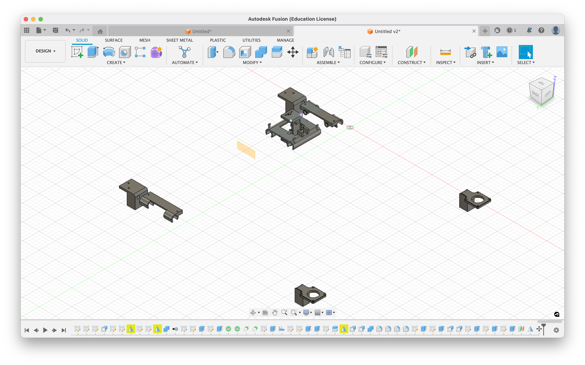

📝 Note: Both this write-up and the project itself are works in progress.
This page documents an automatic pen plotter I designed, programmed, and built over summer 2024. The plotter is driven by an Arduino Uno connected to two NEMA-17 stepper motors. I wrote custom firmware that interprets G-Code (the standard for pen plotters) to control the motors and draw with the pen.
Kinematically, the plotter leverages CoreXY, in which two drive belts are used to provide cartesian motion on the xy-plane. Motion is given as such:
